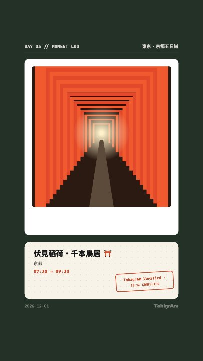
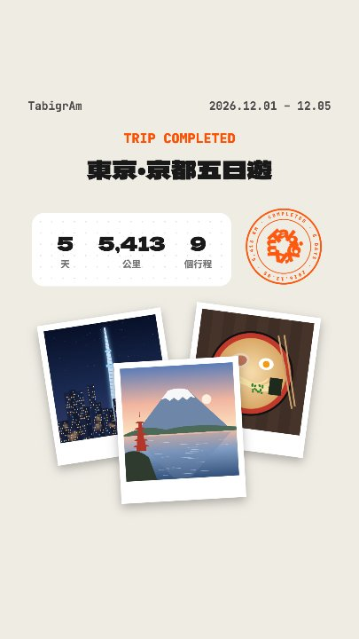
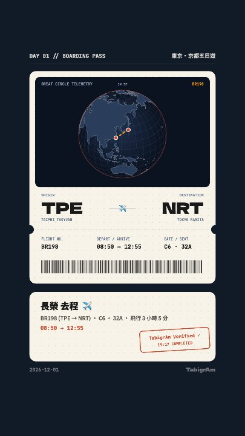
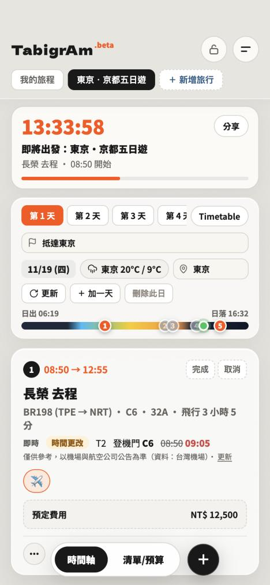
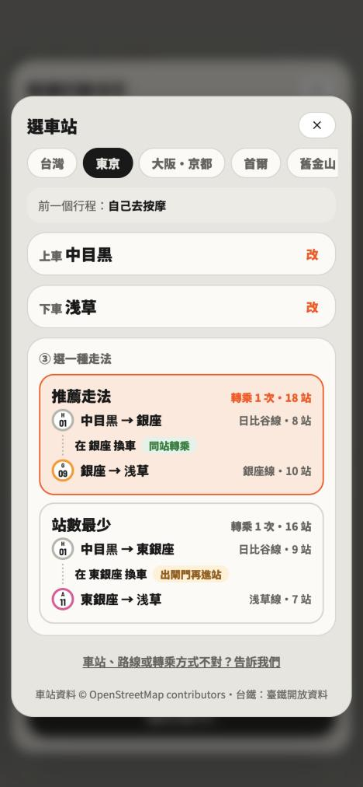
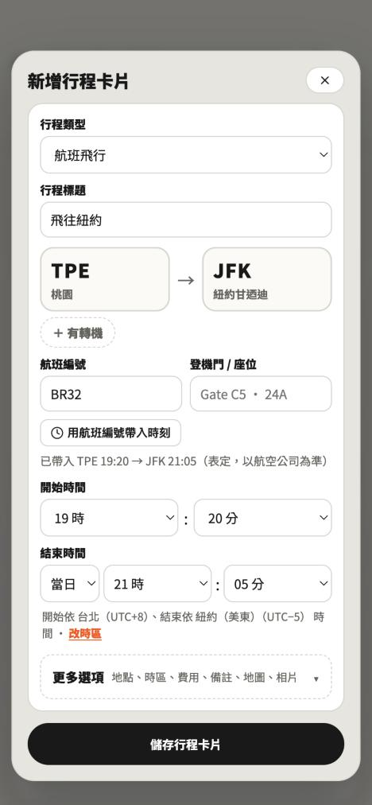
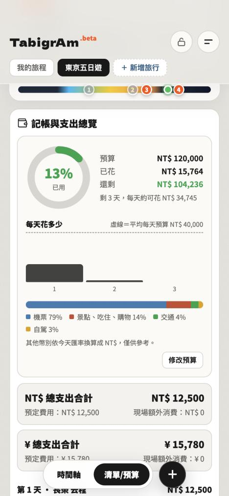
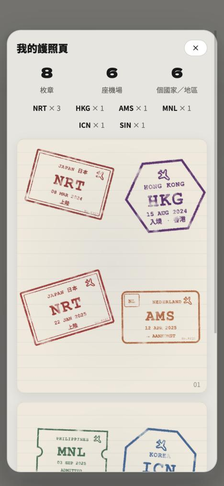
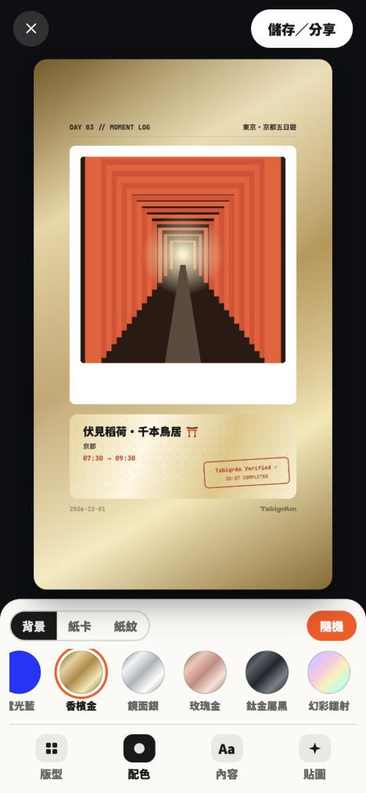
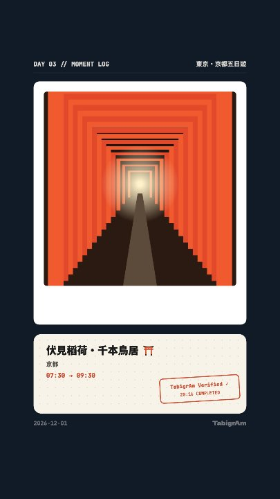

排行程、搭車、等航班，到旅程結束蓋上一枚章。
把每一趟旅行，好好收起來。
TabigrAm 是一個用手機就能打開的旅行網頁 App。不用下載、不用先註冊，打開就能開始排行程；出國當天它會告訴你下一站怎麼去、航班有沒有變動，旅程結束後，再把走過的路畫成可以分享的卡片。



建立旅行時選好出發和回程日期，天數就自動排好。每個行程是一張卡片，交通、景點、航班、自駕都能放，完成了按一下就蓋上「COMPLETED」。

支援台灣、東京、大阪京都、首爾、舊金山、紐約的鐵道與捷運。不用先知道車站在哪條線，直接打站名就找得到，中文、日文、英文都可以。

全球 3,000 多個有定期航班的機場都能選，可以搜尋城市、機場名稱、代號，也能依國家找。有轉機的航班，每一段都能填自己的航班編號。

每張行程卡都能記預定費用和現場額外消費。不同幣別會依當天匯率換算，日圓、台幣混著記也沒關係。

搭飛機那天，在航班卡片按「蓋出境章」「蓋入境章」。要真的在機場附近才蓋得到，所以每一枚章，都是你真的去過的證明。

每張行程卡都能做成 9:16 分享卡。拍立得、登機證、路線圖、船票、公路攝影誌，還有旅程結束的回憶卡。長地名會自動縮字或換行，不會壓到照片和路線。

背景和票卡都能換：沉穩的夜藍、苔綠、原紙色，也有香檳金、鏡面銀、玫瑰金、鈦金屬黑、幻彩鐳射，和在限動裡特別跳的螢光色。想不到怎麼配，就按「隨機」。下面可以直接試試看。

選一種卡片，再換個顏色。這些都是 App 實際做出來的卡片。
用邀請碼共享行程，大家一起改。打卡、照片、心情和蓋過的章是你自己的，不會被看到。
加到手機主畫面後，地下鐵、漫遊沒訊號時一樣打得開；有網路時再自動同步。
在電腦用 Excel 或 Google 試算表排好，複製貼上就變成整趟行程。有中英文範本可以下載。
一鍵匯出行程，丟給 ChatGPT、Claude 或 Gemini，看看轉乘時間夠不夠、哪天太累。
手機是英文就自動用英文，車站顯示英文站名、旁邊附上當地寫法。很適合帶外國朋友來台灣玩。
每個地點都能直接用 Google 地圖或 Apple 地圖打開，想用哪個自己選。
頁面上的手機畫面都是 App 實際畫面，行程和數字是示範用的範例資料。航班時刻為表定時間，實際以航空公司公告為準。